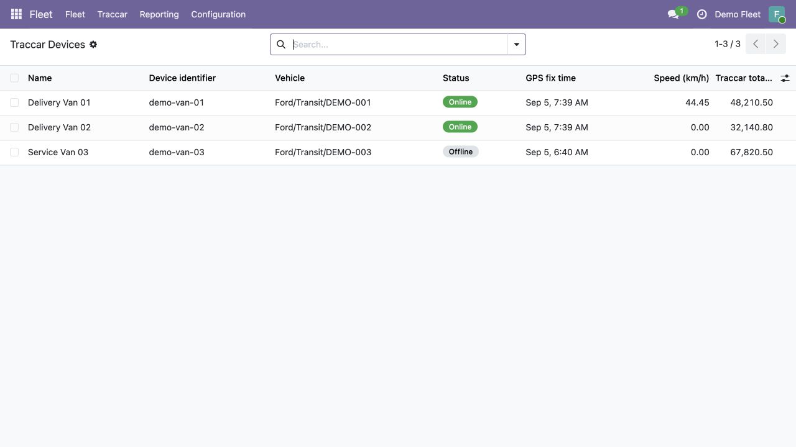
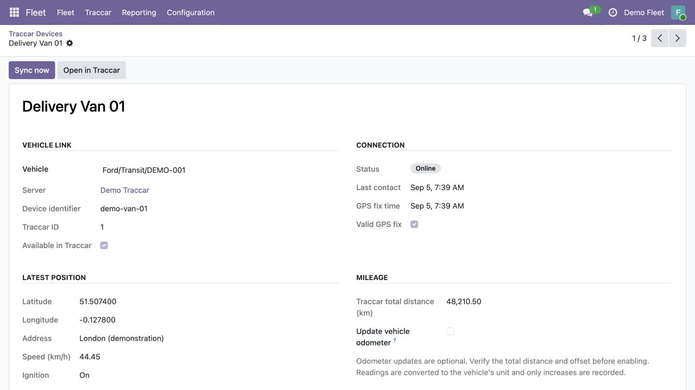

GPS tracking data alongside your vehicle records.
Free and open source · Odoo 19 Community · LGPL-3
Connect your Traccar server to Odoo Fleet. Import devices, link them to vehicles, and see the latest position, connection status, speed, and accumulated distance.
Configure a Traccar connection for each company, using an API token or account credentials.
Choose which Fleet vehicle belongs to each imported device. Vehicle creation stays under your control.
Refresh manually or use the scheduled synchronization, which runs every five minutes by default.
See vehicle links, connection status, GPS fix time, speed in km/h, and total distance in one list.

Inspect coordinates, GPS validity, last contact, ignition when available, and mileage. Open the selected device in your Traccar web app.

Screenshots show fictional demonstration data.
Odometer updates are disabled by default. After verifying Traccar's total distance, set a calibration offset and enable updates per vehicle. Readings are converted to the vehicle's kilometer or mile unit. Only increases are recorded; repeated imports do not duplicate readings.
The connector sends authentication credentials to your configured Traccar API and reads device and position data. It stores connection credentials and tracking snapshots in your Odoo database. No Fleet records are written back to Traccar. Opening a device in the browser passes its identifier to your configured Traccar web application.
Connections and imported devices are scoped to Odoo companies. Fleet officers can view devices in their allowed companies; Fleet administrators can link vehicles and synchronize. Only Odoo system administrators can configure connections and read credential fields. Use HTTPS and a dedicated Traccar account for deployment.
No activation key or additional analytics service is used. GPS history remains in Traccar.
For questions, contact support@traccar.org. This is a free community add-on; no support response time is promised.